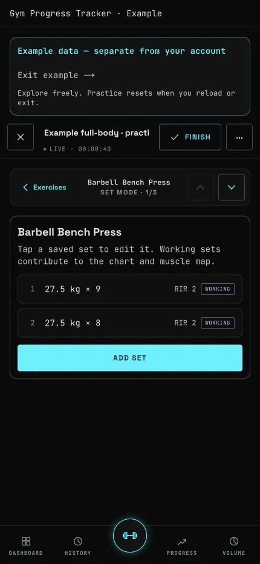
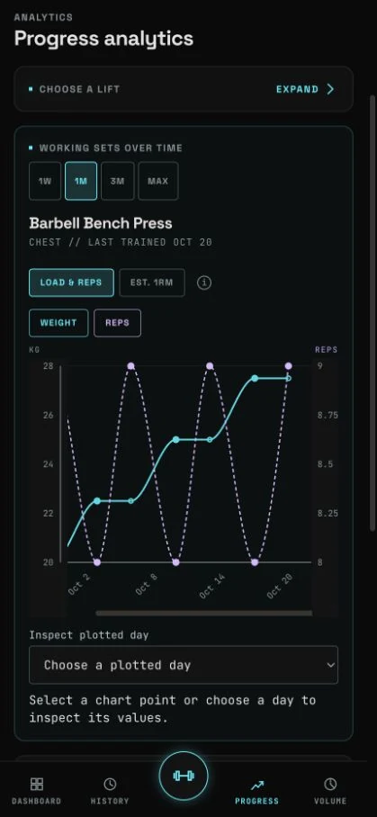
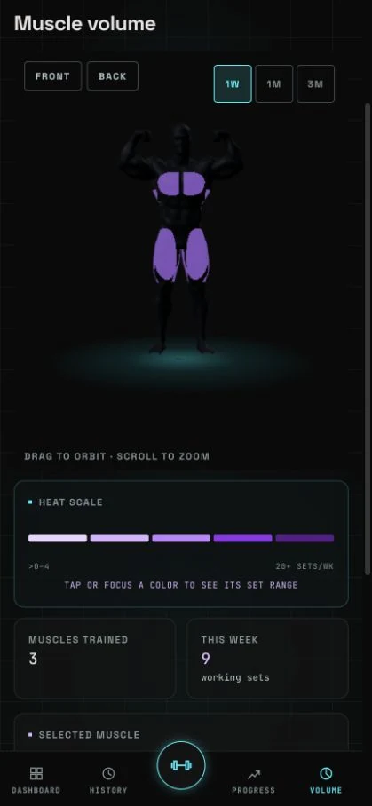

Live status unavailable
Current service health has not been retrieved.
Active incidents
An independently built workout tracker · small public beta
Log the work.
See your progress.
GymTrack brings workout logging, lift progress and muscle-volume analysis into one app. Record your sets, follow your lifts over time, and see how your training is distributed across muscle groups.
A project in use
Live aggregatesProject activity has not been retrieved.
- Enabled accounts
- —
- Includes the owner/admin account.
- Workout records
- —
- Includes imported and retained records.
- Completed in 30 days
- —
- By workout completion date.
Weekly counts and dates
| Week starting | Workouts |
|---|
What these counts mean
Enabled accounts: accounts marked active, including the owner/admin. This describes account status, not recent usage. Counts below five are shown as “under 5”. Older API responses show non-administrator beta accounts with an explicit label instead.
Workout records: current workout-session rows, including imports, administrator sessions, open sessions and soft-deleted rows. Account erasure can reduce this count.
Recent activity: completed, non-deleted workouts, including administrator sessions and retained workouts from accounts that are no longer active. Imports use their original completion dates. The rolling 30 days and eight UTC weeks share the generation cutoff; the current week is partial.
From workout to insight
Example dataMobile screens from the app’s hands-on example. All training data shown here is sample data.


Log every set
Track weight, repetitions and effort as you train.


Follow your lifts
Inspect performance over time with range-aware charts.


Understand your volume
See where your weekly working sets are going.
Services
- Web applicationLogin page
- Unavailable
- API and databasePublic aggregate read
- Unavailable
- Independent status pagePublic page reachability
- Unavailable
Reliability and recent history
Reliability information has not been retrieved.
Daily history from the provider
Date ranges describe returned entries, not uninterrupted coverage. Missing dates are not counted as healthy. Daily states are not uptime percentages.
Recently resolved
Incident history has not been retrieved.
Built, tested and operated
Next.js and Fastify, backed by PostgreSQL. Versioned SQL migrations, database-backed sessions, automated checks, and an independently hosted status page keep the implementation inspectable in the source repository.
Build evidence has not been retrieved.
- Revision
- —
- Evidence generated
Repository checks, PostgreSQL integration tests and browser smoke tests passed for this revision.
The evidence revision may differ from the revision currently deployed to production.
Coverage figures and method
Unit-test line coverage: API —Web —
Line coverage is generated in CI using c8 --all for the unit-test run. Untested source files are included. Integration and browser tests are separate checks.